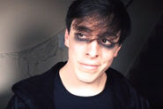
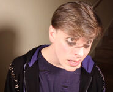
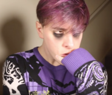
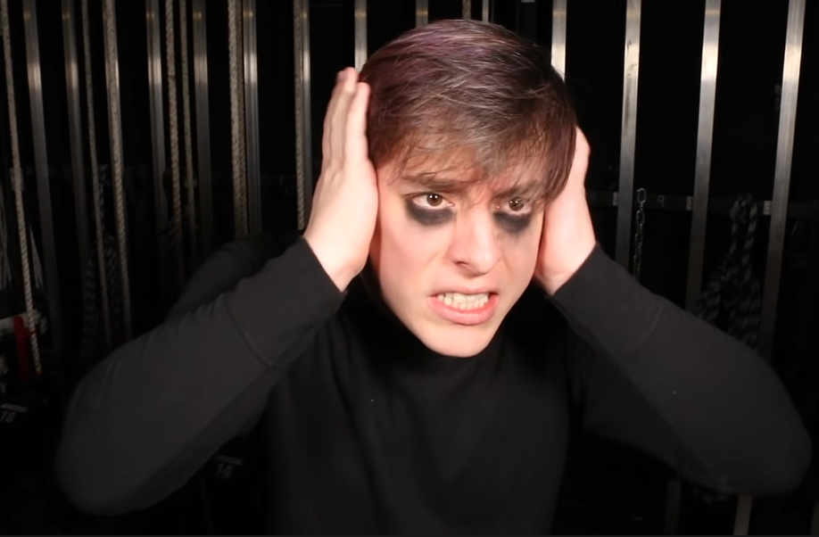
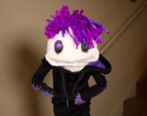
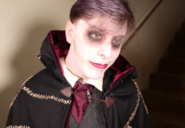
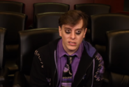

Virgil

Virgil Sanders is Thomas Sanders' fourth and long presumed to be final major Side. He was a former Dark Side before defecting. Virgil represents Thomas' anxiety, caution, vigilance, and his fight-or-flight reflex. His fellow Sides are Roman, Patton, and Logan.
Virgil is also the voice of reason, much like Logan, but does not attempt to solve the problems he sees in the same ways Logan does. He represents Thomas's fear, edginess, and overall dark nature. Virgil is a "self-deprecating emo" (implied by Roman and Virgil himself) and has gone through a lot of character development since his introduction.
Virgil started out as the main antagonist of Season 1, but it wasn't until ACCEPTING ANXIETY, Part 1/2: Excepting Anxiety! when he was officially accepted as a Side. His character arc parallels Thomas gradually becoming more comfortable with his anxiety. Virgil himself has stated that he puts on his dark persona as the best way to get anyone’s guard up. Although after said arc, Virgil has shown his more sensitive side, cooperating more with the other sides.
In the Q&A, Virgil's name was stated to be of Latin origin and means 'protector'. Joan had also said that they wanted Virgil's name to fit with Roman someway and there was a Roman poet named Vergil(ius). It has been confirmed they made allusions to the fact Virgil was a poet and derived the name from 'vigil' too. The poet was also a character in the story "Dante's Inferno" who assisted Dante out of the underworld (much like what happens in ACCEPTING ANXIETY, Part 2/2: Can Anxiety Be Good?). It can also mean 'strong' or 'flourishing'.
From Virgil's first episode, Taking on ANXIETY with Lilly Singh!! to Fitting In (Hogwarts Houses!) when the Sides changed into their new outfits, he wore a black t-shirt, with a black plaid hooded jacket over the top (unzipped). He also wore black jeans and black shoes (only shown in his first episode). He had messy black eyeliner that was smudged under his eyes. Virgil also generally has his bangs down in front of his eyes.
From Fitting In (Hogwarts Houses!) to present, Virgil wears a custom made black hooded jacket (unzipped), with purple-and-black plaid patches sewn on. His sigil is found on the left part of the chest. He wears a purple dyed, long sleeve t-shirt with a slightly ripped pattern. His bangs in front of his eyes also remains the same. The black under his eyes remains the eyeshadow from ACCEPTING ANXIETY, Part 2/2: Can Anxiety Be Good?.
On occasion, Virgil has worn various other outfits.
In The Sanders Sides 12 DAYS OF CHRISTMAS!, Virgil wears a complex Christmas sweater consisting mainly of the colors purple, black, and white. The most prominent features are the large trees on the sleeves near the shoulders, Virgil's signature plaid purple patches, and the curvy gusts of wind near the cuffs of his sleeves. He comments that the sweater is pretty chill (earning the comment from both Logan and Patton that "I'd say mine is rather toasty").
In Can LYING Be Good??, he wears a black long sleeved shirt. When managing the controls (the lights, the set, the costumes, the props, the actors...) he wears a black headphone set with a microphone attached.
In Learning New Things About Ourselves, Virgil turns into a sock puppet. He wears his normal hoodie and he has purple hair made of string. His eyes are buttons, the left one being green and the right one being purple.
In EMBARRASSING PHASES: The Nightmare Instead of Christmas!, Virgil dresses up as a vampire. He wears red lipstick, dark eye makeup, and later lots of fake blood. He wears a poet shirt with lace cuffs, a maroon ascot, a grey vest, and dark maroon gloves under a black cape with decorative stitch marks.
In Selfishness v. Selflessness, he wears his normal hoodie with a purple polo shirt underneath. He also wears a black tie with purple-and-black plaid patches sewn on it.
Virgil has a notable pessimistic personality. His tendency is always to adopt the most negative interpretation, or to imagine the worst outcome of any situation. In some cases, this appears to be a confidence issue, and he is simply trying to avoid setting Thomas up for disappointment. Sometimes, Roman and Logan find his attitude a bit annoying, while Patton takes the opportunity to offer him encouragement. His negative outlook is also often employed for comedic purposes (You tried, you failed, let's go to sleep).
He finds that he does not fit within a specific Hogwarts House, unlike the other Sides and Thomas.
Virgil's Room is described as "the corner of [Thomas'] mind to enhance [his] anxiety." The room also has a negative effect on the Sides, causing their main functions to work to drive [Thomas] far over to the other end of that [Yerkes-Dodson] curve, heightening his anxiety. These negative effects can be evidenced by the Sides gradually gaining black eyeshadow that mimics Virgil‘s constant black eyeliner pencil smudges, although even Virgil when in the room has a darker, more intense eyeshadow. The other sides become progressively more anxious to an extreme but they still maintain their core values that their personality fractions represent. As their anxiety heightens, Virgil's voice grows progressively more distorted and demonic.
It is the first ‘Room’ to be shown, and is based on the exact location that Thomas is at - however, said location (his living room) is decorated in darker decorations.
Logan's corner of the room is covered in cobwebs; spider covered curtains, or as Patton refers to it, Creepy Crawly Death Dealers covered curtains behind Patton's spot; a poster of The Nightmare Before Christmas and a stripy lamp behind Roman; and a clock on the wall behind Thomas whose hands move faster than usual.
Virgil's relationship with Roman is a bit of a rocky one; they are almost always at odds. They slowly seem to be patching this up, however, as Roman is attempting to lessen the insults and Virgil does notice this.
Virgil’s favorite thing about Roman is that he “goes for things” but he’s not sure if he actually likes that. He isn’t sure if he would like to be more outgoing like Roman, or if he doesn’t want to let that fear into his life. But if that’s what makes Roman happy, he says go for it, man.
Virgil seems to get along with Patton the best of all the other Sides, stating that Patton is a funny guy in ACCEPTING ANXIETY, Part 2/2: Can Anxiety Be Good?. Patton seems to care a lot about Virgil in turn. On rare occasions, Patton can make Virgil laugh or at least smirk. He typically accomplishes this with his puns, dad jokes or by simply causing Logan to lose his temper, which Virgil finds hilarious. However, in an effort to hide his feelings under a dark persona, Virgil hides his laughter by placing his hand over his smile, laughing quietly or simply repressing any signs of anything positive-related caused by Patton or any other Side for that matter. Also, in the end segment of The Sanders Sides 12 DAYS OF CHRISTMAS!, Virgil gives Patton a note for a Secret Santa present. The note says on the front You make me want to die... then on the inside, it says of laughter. Underneath that phrase, it says Best Friends -Virgil.
Although, sometimes, Virgil is shown to be uncomfortable by Patton's nicknames for him, which he sees as belittling while he is just as old as the rest of them. This causes there to be a slight rift between them Patton may or may not be aware of.
Virgil and Logan have in common that they both see the more realistic side of life, although they do conflict in several discussions, most notably in My NEGATIVE Thinking. In this video, Virgil insults Logan several times, and at the end, he acts surprised when Logan compliments him on the debate, saying that [I] thought you didn’t like me.
While initially fooled by Janus's disguise as Patton in Can LYING Be Good??, Virgil grows gradually more suspicious over the course of the video, suggesting that he can identify Janus. He does not appear to be afraid to make snide remarks at Janus's expense, shooting back an insult about Janus's yellow gloves when the latter says his eye shadow makes him look like a raccoon. It can also be noted that Virgil and Janus share a hateful glance at each other.
Throughout Dealing with INTRUSIVE THOUGHTS Virgil, along with Patton, tries to repress Remus. Virgil admits that Remus is a part of Thomas. However, Virgil admits that he feels ashamed that he was unable to protect Thomas from Remus and the Others.